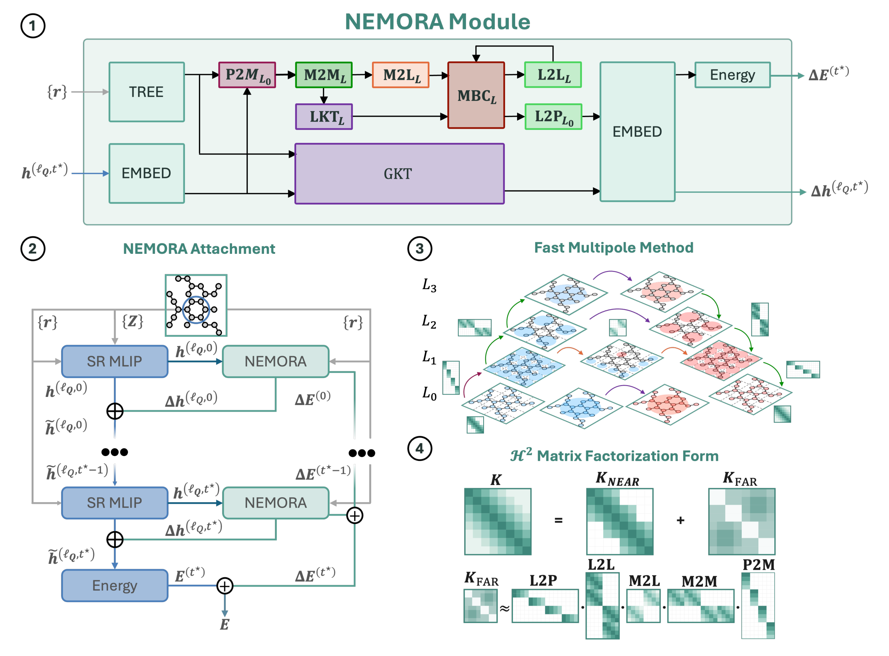
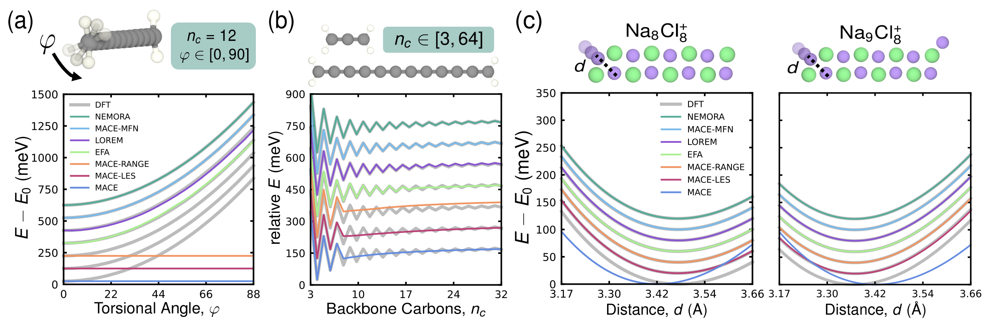
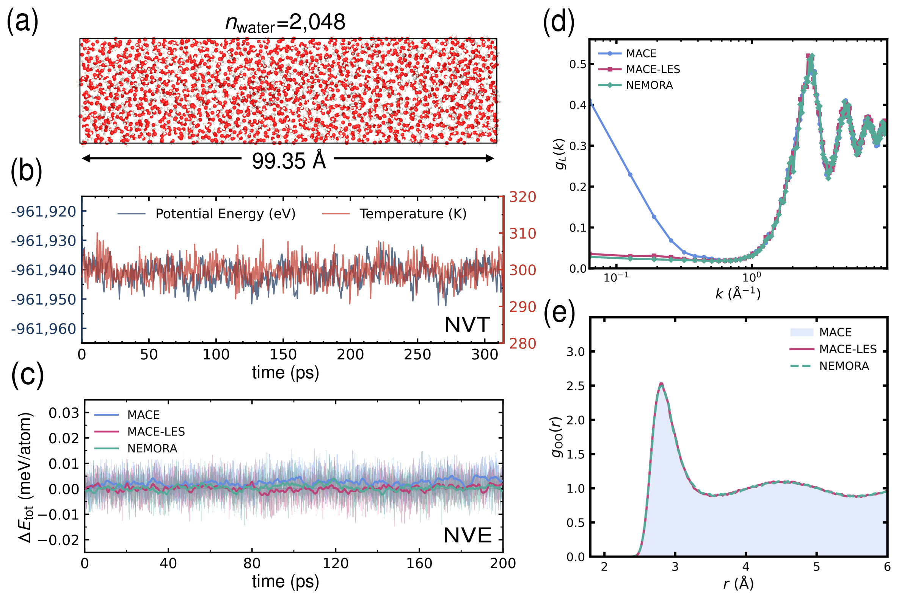
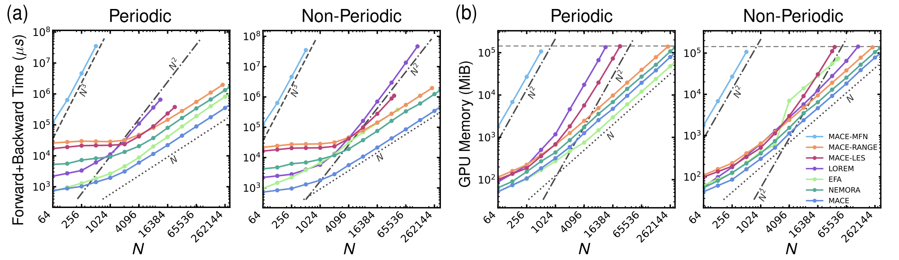

NEMORA：用可学习的多极层级连接远端原子，兼顾方向、多体作用与大体系计算
论文原文 ↗Jay L. Kaplan、Samuel Varner、Rebecca Willett、Juan J. de Pablo，NEMORA: Neural Equivariant Multipole Operators for Long-Range Atomistic Learning，arXiv，2026。官方页面｜原始 PDF
一根长累积烯碳链，两端各有一个 CH₂ 基团。转动其中一端，会通过离域电子改变整条链的能量。局部机器学习势却只收集每个原子附近的信息：两端相距超过截断范围时，模型很难知道它们的相对方向。增加消息传递层虽能让信息走得更远，也会增加成本，并把许多远处信息挤进有限的局部表示。
长程模型需要同时解决三件事：传递远处的影响，保留方向与多个远端环境的联合作用，还要把计算扩展到大体系。NEMORA 以快速多极子法为骨架，将其远场传递改造成可学习的等变算子，让局部原子势获得跨尺度的长程信息，并保持线性的时间和内存增长。
方法怎样做：把局部原子特征汇总成远场，再传回每个原子
“等变”描述的是特征怎样随结构旋转：标量保持不变，向量和更高阶张量按相应规则一起旋转。网络据此保留原子环境的方向，最终输出整体旋转不变的能量。NEMORA 的长程通道能够耦合不同角阶的张量，因而可以传递比一个标量电荷更丰富的环境信息。
从累积烯的原子种类和坐标开始，短程主干先建立局部邻接图，计算每个原子的环境特征。论文主要使用 MACE，也接入 NequIP、ViSNet 和 PET。NEMORA 从主干中间层取出特征，映射为供长程通信使用的张量源。标量通道描述整体强度，更高角阶通道描述方向性。
怎样让远端原子使用这些信息，又避免逐对遍历？快速多极子法的思路是：从远处看一团源，不必分别访问每个粒子，可以用少量展开系数概括它们。空间树把原子分成小团，再逐级合成大团；目标离得越远，越能复用同一份团级表示。NEMORA 保留这个层级组织，同时学习各步传递的权重和耦合方式。
这条路线可以顺着五个动作理解。先由原子到小团，将原子特征及其相对位置汇总；再由小团到大团，逐层形成更大范围的源表示。随后，远处的源团向目标团传递局部场，参考团间距离和方向。场再沿目标侧的树向下展开，最终回到每个原子，成为长程特征修正。

原图 1｜右侧展示源团向上聚合、目标场向下展开；左下展示长程特征怎样接回短程主干。P2M、M2M、M2L、L2L、L2P 对应原子到团、团级合并、远场交换、向下传递和回到原子。
其中，球谐函数提供组织空间方向的基底，Clebsch–Gordan 张量积把不同角阶的信息组合成满足旋转规则的新特征。网络学习组合权重、径向调制和门控，保留快速多极子法的径向形式作为物理启发。汇总后的场还经过张量组合，使多个远端团能够共同影响目标环境，形成多体作用。局部和全局 Kelvin 分支则把团内或全体系的汇总多极信息转成可反馈给原子的平滑环境响应。
经过这些步骤，另一端 CH₂ 的方向已经成为每个原子可使用的信息。修正后的特征进入主干后续层和能量读出，长程模块也贡献附加能量；对总能量按坐标求导即可得到力。训练时，参考能量和力共同调整模型；使用时，输入种类和坐标即可沿同一路线计算。
论文还给出解析 NEMORA：主干学习原子电荷或偶极，空间层级按照解析多极规则计算长程能量。可学习算子用于非局部表示任务，解析形式用于离子熔体和水，体现同一种层级组织对不同长程建模方式的支持。
主要结果：非局部精度、跨主干接入和线性规模增长
长程方向与电荷响应都能进入预测
12 碳累积烯的端基扭转，是检验方向信息的直观任务。DFT 参考能量随端基转动变化；短程 MACE 以及只传递标量的若干长程扩展给出近乎平坦的曲线，而 NEMORA 与 MACE–MFN 较好恢复了扭转响应。改变链长时，NEMORA 也能跟随能量的奇偶起伏。

原图 2｜a 比较端基扭转曲线，b 比较链长奇偶效应，c 比较远处有无额外中性 Na 时另一端的结合曲线。曲线作了竖直平移，读图重点是形状和极小值位置。
在另设的链长泛化测试中，模型用 3–10、13、14 碳链训练，预测中间留出的 11–12 碳链和更长的 15–16 碳链。NEMORA 将中间长度的能量均方根误差从 MACE 的 16.709 降至 0.744 meV/atom，更长链从 11.994 降至 3.770 meV/atom。主干替换实验也显示，加入含方向的张量源能改善不同架构；仅提供标量的主干，还可借助相对几何构造张量长程特征。
Na₈Cl₈⁺ 与 Na₉Cl₈⁺ 则检验电荷相关的非局部效应。两个簇净电荷相同，但后者在约 21 Å 外多一个中性 Na，会改变另一端 Na 的结合曲线。NEMORA 恢复了两种曲线的差别，力误差为 1.75 meV/Å，短程 MACE 为 43.89 meV/Å。结合累积烯与电荷转移基准，结果展示了该架构对不同远场信息的表达能力。
水体系同时检验局部拟合和集体极化
水数据以 revPBE-D3 为参考。让解析 NEMORA 学习原子偶极后，能量、力误差分别为 0.305 meV/atom 和 11.86 meV/Å，低于短程 MACE 的 0.415 和 20.83。随后，作者使用标量解析模型进行水的分子动力学：512 分子的恒能量模拟保持较小能量漂移，2048 分子的 300 K 细长周期盒模拟维持稳定温度和能量。

原图 3｜a–c 展示水模拟和能量变化；d 是纵向偶极关联，波矢越小对应越大的空间尺度；e 是氧—氧径向分布，反映局部液体结构。
氧—氧径向分布在 MACE、MACE–LES 和 NEMORA 中相近，而长波偶极关联将它们区分开来：MACE 在小波矢处明显上升，两个长程模型保持预期的有限响应。这里，模型从局部结构拟合进一步走到集体极化行为，显示长程通道对极性液体的作用。
同一层级架构可扩展到数十万原子
在单张 H200 GPU 的规模测试中，作者逐步增加固定密度体系的原子数，测量一次能量与力计算的时间和峰值显存。NEMORA 在周期与非周期体系中都接近线性增长，可处理约 34 万原子；262,144 原子的一次计算约需 1.2–1.3 s。密集 MACE–MFN 在同一测试中约 512 原子达到显存上限。

原图 4｜a 为能量和力评估时间，b 为峰值显存。双对数坐标中的 N、N²、N³ 参考线显示不同增长速度；绿色 NEMORA 曲线在两种边界条件下均接近线性。
对领域的贡献
NEMORA 将快速多极子法的空间层级，转化为能够从数据学习的长程表示系统。它同时组织远端方向耦合、多尺度信息与多体组合，并把结果接回既有短程主干。非局部任务中的精度提升、四种主干的接入以及数十万原子的规模测试，共同回答了开场的问题：长程表达能力可以与大体系计算效率放进同一套架构。
这为机器学习势提供了具体的模块化路线。局部主干继续学习近邻化学，远场层级负责跨越截断范围，能量与力数据共同训练二者；解析版本则进一步连接学出的电荷、偶极与高效的长程求和。研究者因而可以围绕体系需要的长程信息选择表示，而不必在局部模型与全局密集计算之间二选一。
附：完整原始摘要中文翻译
等变图神经网络已成为机器学习原子间势的基础架构，能够以量子化学计算的一小部分成本达到接近量子化学的精度。这些模型能够准确描述局部原子环境，但有限的空间截断会截断长程信息流，而堆叠消息传递层可能导致过度平滑和信息过度挤压。现有长程扩展或者规定一个固定的解析传播核，或者将长程通信限制为标量或保持角阶的通道，或者只具有近似等变性，或者需要超线性的计算成本。如何把可学习的长程等变传递、多尺度多体表达能力与面向更大体系的高效规模增长结合起来，仍是一个核心挑战。
我们提出神经等变多极算子（NEMORA），这是快速多极子法（FMM）的一种神经等变扩展，用于学习长程张量表示。NEMORA在自适应空间层级上，将FMM的解析多极展开和变换算子推广为可学习的等变对应形式。其算子耦合不同角阶，并在跨长度尺度上形成多体相互作用；它保留FMM的层级组织和解析径向因子作为物理归纳偏置，同时学习依赖数据的长程耦合。
NEMORA的评价具有线性的时间和内存复杂度，因此能处理比其他长程方法更大的体系，达到数十万个原子，并且能够增强同时包括受对称性约束和不受对称性约束的短程主干。在非局部基准上，相对于短程主干，它将力误差降低超过一个数量级，将能量误差最多降低三个数量级；在精度上优于现有长程扩展，或与它们具有竞争力。